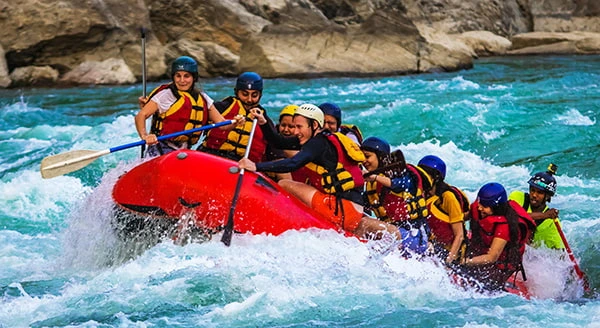

At Rapids, we exist to awaken the spirit of adventure in every soul. Our purpose is to reconnect people with nature’s untamed beauty through heart-pounding, whitewater experiences that inspire, challenge, and transform.

At Rapids, we exist to awaken the spirit of adventure in every soul. Our purpose is to reconnect people with nature’s untamed beauty through heart-pounding, whitewater experiences that inspire, challenge, and transform.
Rapids was founded in the early 2000s by two childhood friends with a shared love for rivers, teamwork, and the simple joy of outdoor adventure. What began as weekend explorations with a homemade raft and a deep respect for nature quickly grew into a calling: to help others experience the wonder, challenge, and beauty of the river.

Over the years, Rapids has grown into a trusted name in outdoor adventure, known for its commitment to safety, integrity, and joyful experiences rooted in respect for creation. While the gear has improved and the rivers have changed, the spirit remains the same:
To paddle with purpose. To serve with joy. To let the river remind us who we are.